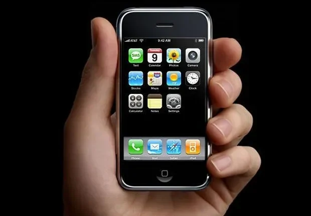
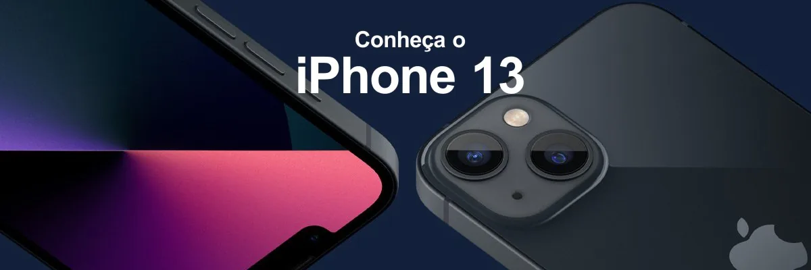
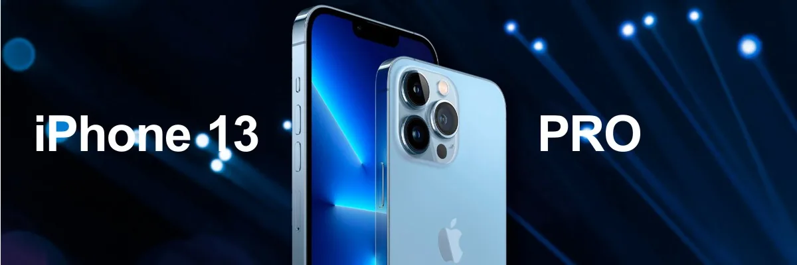
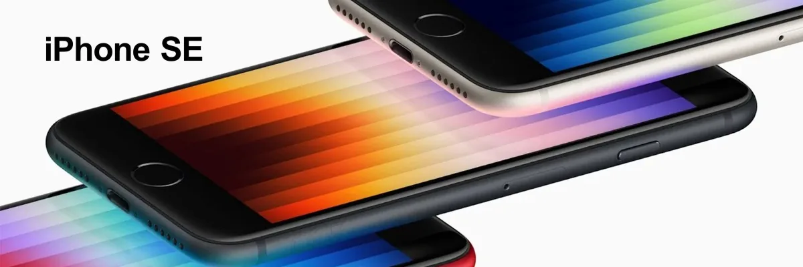

Acervo · 2007–2025
Tudo começou com 3,5 polegadas.
Um acervo do iPhone: nove modelos que marcaram a história, a linha de 2022 em detalhe, fotos feitas com ele e campanhas em vídeo.
Percorrer a linha do tempo
Linha do tempo
De 3,5″ a 6,5″, na mesma escala.
Steve Jobs apresentou o iPhone em 9 de janeiro de 2007, e o aparelho chegou às lojas dos EUA em 29 de junho. No Brasil, a estreia foi com o iPhone 3G, em 26 de setembro de 2008. Os nove modelos abaixo estão desenhados na mesma escala: a diferença de tamanho entre eles é a real.
-
iPhone
3,5″ 115 × 61 mm
Tela multitoque no lugar do teclado físico.
-
iPhone 3G
3,5″ 115,5 × 62,1 mm
Estreia da App Store e chegada ao Brasil.
-
iPhone 4
3,5″ 115,2 × 58,6 mm
Tela Retina e FaceTime.
-
iPhone 5
4″ 123,8 × 58,6 mm
Tela mais alta e conector Lightning.
-
iPhone 6 Plus
5,5″ 158,1 × 77,8 mm
A primeira tela grande, e o Apple Pay.
-
iPhone X
5,8″ 143,6 × 70,9 mm
Sai o botão de início, entra o Face ID.
-
iPhone 12
6,1″ 146,7 × 71,5 mm
Bordas retas, 5G e MagSafe.
-
iPhone 15
6,1″ 147,6 × 71,6 mm
USB-C e Dynamic Island em toda a linha.
-
iPhone Air
6,5″ 156,2 × 74,7 mm
5,6 mm de espessura: o mais fino até então.
Altura × largura oficiais de cada modelo. Silhuetas simplificadas.
Vitrine
As campanhas da linha de 2022.


